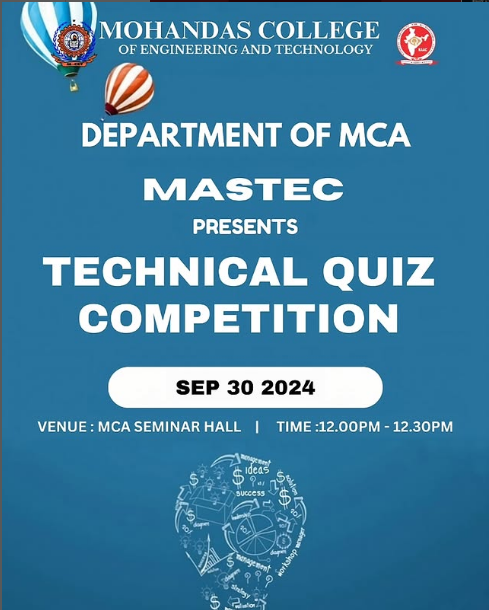

MASTEC-2026
Mastec Inauguration 2026

The Department of Master of Computer Applications (MCA), Mohandas College of Engineering and Technology, successfully organized the MASTEC Inauguration 2026 on 21st January 2026 (Wednesday). The event marked the formal inauguration of MASTEC activities for the academic year and aimed to motivate students through academic, technical, and co-curricular initiatives.
The inauguration was graced by the presence of Mr. Arif Mohammed, Director, JHF IT Innovations, as the Chief Guest. His participation added value and industry perspective to the event.
The programme commenced at 10:30 AM with a prayer, followed by a warm welcome address by Prof. Sreeja K., HoD in charge, Department of MCA. The inaugural session included the following highlights:
Presidential Address: V. Suresh Babu, Principal
Address by Director: Sreekanth Narayanan
MASTEC Report Presentation: Subha Ramachandran, Faculty Advisor, MASTEC
Release of MASTEC Anthem and Website
Prize Distribution
Inaugural Address: Arif Mohammed, Director, JHF IT Innovations
Vote of Thanks: Dani M. Panicker, Secretary, MASTEC
The programme concluded successfully at 12:15 PM.
MASTEC-2025
Start Up Idea Competition ‘25

The Department of Master of Computer Applications (MCA), Mohandas College of Engineering and Technology, under the banner of MASTEC, successfully organized Pixel2Prototype, a Startup Idea Competition. The event was conceptualized to nurture innovation, entrepreneurial thinking, and problem‑solving skills among students by encouraging them to transform creative ideas into feasible prototypes
The primary objectives of Pixel2Prototype were:
->To promote innovation and creativity among students
->To encourage entrepreneurial mindset and startup culture
->To provide a platform for students to present real‑world problem‑solving ideas
->To bridge the gap between conceptual ideas and practical implementation
Participants were required to register online through a Google Form. A QR code and registration link were provided in the event poster for easy access. Students submitted their innovative startup ideas within the stipulated deadline.
Participants presented unique and innovative startup ideas addressing real‑world challenges.Ideas were evaluated based on originality, feasibility, innovation, and potential impact.The competition motivated students to think beyond textbooks and apply their technical knowledge creatively.
MASTEC-2024
MASTEC Technical Quiz Competition

The Department of MCA, Mohandas College of Engineering and Technology, successfully conducted the Technical Quiz Competition organized by MASTEC on 30th September 2024 at the MCA Seminar Hall. The event, held from 12:00 PM to 12:30 PM, witnessed enthusiastic participation from students across semesters, showcasing their technical knowledge and quick-thinking abilities.
The quiz aimed to test participants on diverse domains of computer applications, logical reasoning, and problem-solving, creating an engaging and competitive atmosphere. Students displayed great enthusiasm, teamwork, and presence of mind, making the event both exciting and intellectually stimulating.
After a tough battle of brains, the winners were announced:
🥇 First Prize – Mohammed Shiroz & Akash S (S1 MCA)
🥈 Second Prize – Arjun S & Aromal Udayan (S3 MCA)
The winners were felicitated by the faculty of the MCA department, and their achievement was celebrated with applause and appreciation.
The event not only highlighted the technical acumen of the students but also encouraged peer learning and healthy competition. MASTEC continues to provide such platforms to nurture talent, teamwork, and innovation among MCA students.
Congratulations to all the winners and participants for making the event a remarkable success!
MASTEC-2023
MASTEC-2023
MASTEC ’23 commenced with the inaugural address by Dr. Pradeep Shanmugham, AVP of Nest Digital, held at the Civil Auditorium on November 24, 2023, at 11:00 AM. The event opened with a warm welcome speech from Prof. Sreeja K, Head of the Department of MCA. Dr. Ashalatha Thampuran, Director of MCET, delivered the Presidential address, emphasizing the importance of technological advancements in today’s world. Principal Dr. S Sheela also addressed the gathering, highlighting the significance of such platforms in fostering innovation and learning Dr. Pradeep Shanmugham later delivered an insightful technical talk on the evolution and future prospects of technology. The Chief Guest was honored with a memento by Dr. Ashalatha Thampuran, recognizing their contribution to the event. Certificates were distributed to the winners of various competitions held during MASTEC-2023,celebrating their achievements and contributions to the field of technology.. Ms. Neeraja B, Joint Secretary of MASTEC, extended heartfelt thanks to all participants and contributions to the field of technology.